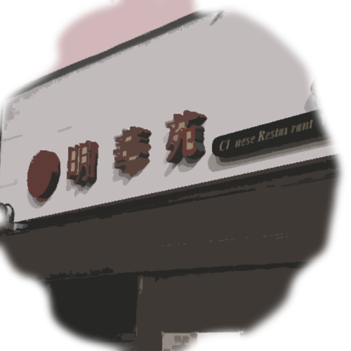

You turn left
You walk underneath a huge rotary, hearing the cars zoom past over head despite how late it is. Nothing here looks familiar to you, but you keep walking hoping that no one notices you.
You pass by a Chinese restaurant and a few art shops featuring portraits and famous paintings you’ve seen before until you reach the end of the street at another crossroads.
Where do you go?